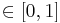

BigStitcher ICP refinement
The default stitching pipeline of BigStitcher will calculate a translational alignment of your images. In some cases, however, there might also be more complex transformations (such as rotations between tiles or scaling between channels due to chromatic aberrations) between the images. To account for such affine transformations between the images, we offer the possibility to Refine the Alignment using the ICP (Iterative Closest Point) algorithm combined with global optimization.
Simple refinement
The ICP refinement can be found in the main (right-click) menu of the Stiching mode under Registration Refinement (optional) › Refine with ICP:

ICP is an interest-point-based algorithm, meaning that we have to first detect interest points in the sample before aligning the images. In simple mode, we do this automatically, with a just a few adjustable parameters.
In the sub-menu, you can set the 3 main parameters:
- Downsampling: By how much to downsample the images for interest point detection. Higher downsampling greatly reduces compute times but too high settings might reduce the quality of the results. We suggest to start with high downsampling and only decrease it if you are not happy with the results.
- Threshold: Intensity threshold for the points to be detected. The threshold should be low enough to detect enough interest points but a too low setting will lead to spurious detections that might throw off the alignment.
- Adjustment: By how much the algorithm is allowed to move the images. Typically, the images should already be roughly aligned at this point, so we advise to stick to low settings.
The current selection is displayed in red, other options in gray. Click on a preset or hover over it with the cursor for a short time to select it.
Finally, you can start the refinement by clicking:
- Simple (tile registration): will try to refine the alignment of the tiles of you data (multiple channels are transformed the same way)
- Simple (chromatic aberration): will try to correct chromatic aberrations by transforming channels (all tiles of one channel will be transformed the same way).
- Simple (all together): will try to both refine the tile alignment and correct chromatic aberrations in one step. If you have multiple illuminations (and have not selected one of them yet), they will also be aligned.
Expert refinement
Click Expert... in the Refine with ICP menu to bring up advanced options.
First, if you did not detect any interest points yet, you will be taken to the interest point detection immediately.
Once you have detected interest points, a dialog with expert options will pop up. In this dialog, you can set the following parameters:
- Interest Points: the interest points to use
- ICP maximum error: the maximum allowed error for point matching. Increasing this value leads to a coarser alignment.
- Transformation Model: The type of transformation to compute (Translation, Rigid or Affine).
- Regularize Model: check to compute transformations of another type simultaneously and return a weighted average
- Group Channels: Whether to groups channels (i.e. transform them together) or not. You can also select Only channel ..., in which case the tiles of the other channels will be un-grouped (overriding the following option).
- Group Tiles: Whether to groups tiles (i.e. transform them together) or not.
- Group Illuminations: Whether to groups illuminations (i.e. transform them together) or not.

If you opted for Regularization of the transform in the previous dialog, you will be asked for the type of the second transformation model to estimate and a lambda (), i.e. how much weight you want to give to the regularizing model in the final averaged result.

Go back to the main page